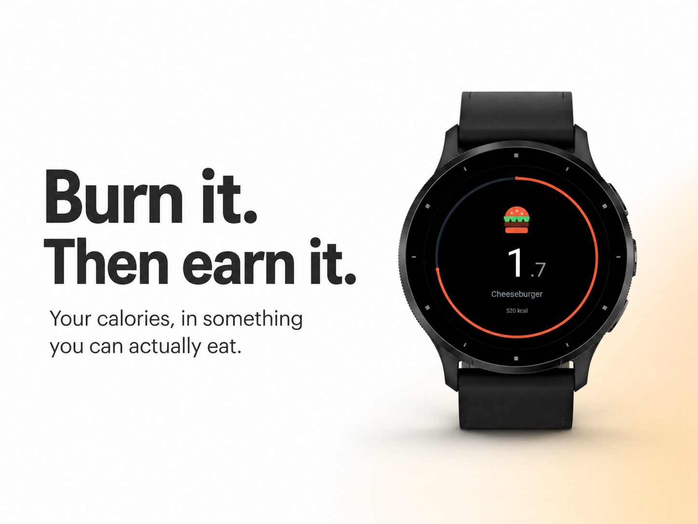
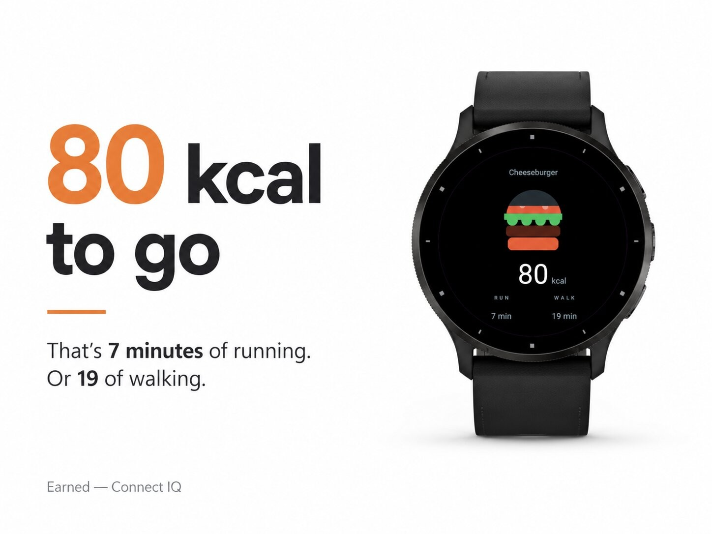
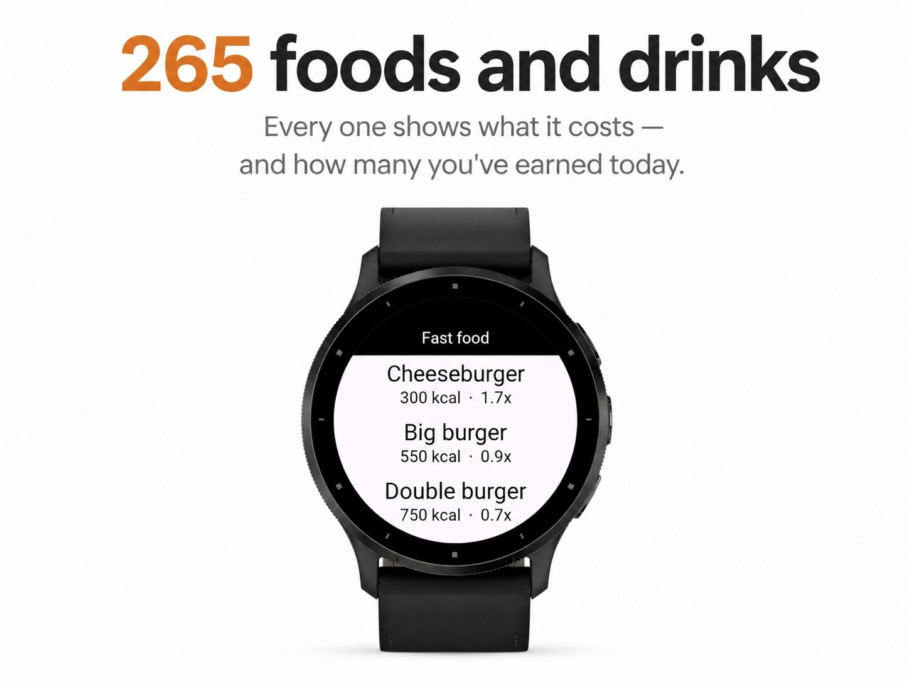
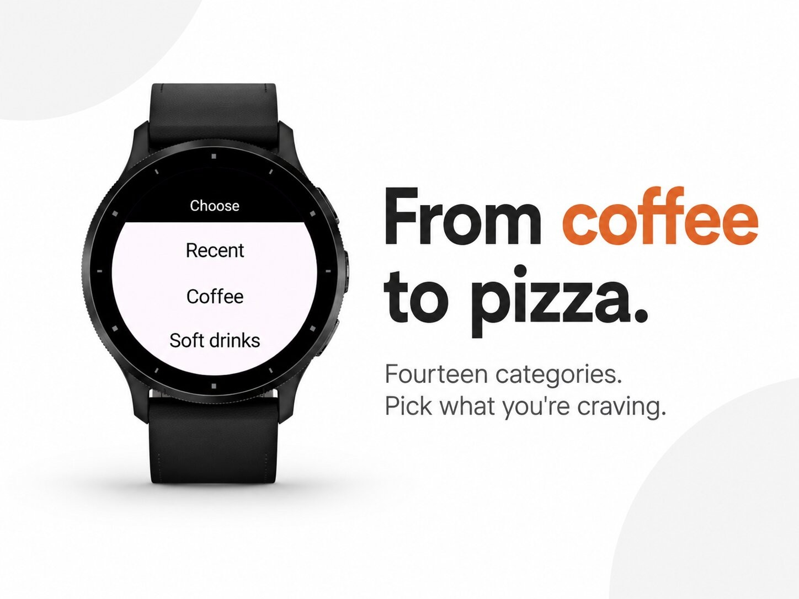
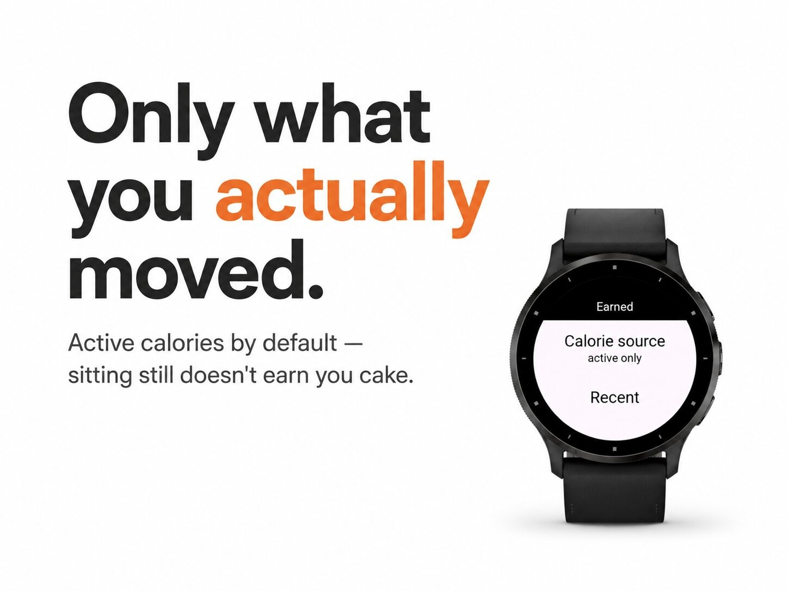

Health & habits · Device app
Burned calories, shown as food you can picture.





Turn the calories you burn into something you can actually picture: a coffee, a slice of pizza, a beer.
Pick a food or drink and the dial shows how many of them today's burn has paid for. Swipe up to see what is still missing — in calories, and in minutes of running or walking.
No account, no internet connection, no subscription.